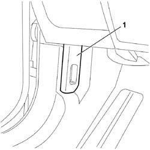

7025A24 BONNET LID OPENING LEVER - R+R
- Path
- Procedures > 70 FITTINGS > 7025 COMPARTMENT COVERS > 7025A BONNET LID > 7025A24 BONNET LID OPENING LEVER - R+R
- Kind
- repair procedure (removal / refitting; the operation number is the code)
- Applies to
- all engines; all production periods
- Interactive page
- https://sloeber94.github.io/elrnDB-fCrm/en/#/194000959
Applies to: all engines; all production periods
 Removing
Removing
 Refitting
Refitting1. Working carefully, release and remove the bonnet release lever.

Applies to: all engines; all production periods
Refitting
Removing- Insert the bonnet release lever in its housing, checking that it is correctly positioned.
Topics that link to this page (6)
- 7005A14 FRONT SIDE DOOR - ADJUST CENTERING AND MOULDING - INCLUDES ADAPTATION OF HINGES AND SEALS ON DOOR COMPARTMENT
- 7005A24 FRONT SIDE DOOR HINGES (BOLTED) - R.R. WITH DOOR DETACHED
- 7005A34 FRONT SIDE DOOR COMPARTMENT SEAL - R.R
- 7025A26 BONNET LID OPENING CONTROL - R.R.
- 7025A28 BONNET LID OPENING CABLE - R R
- 7040L39 LEFT FRONT DOOR COMPARTMENT SILL PLATE R R